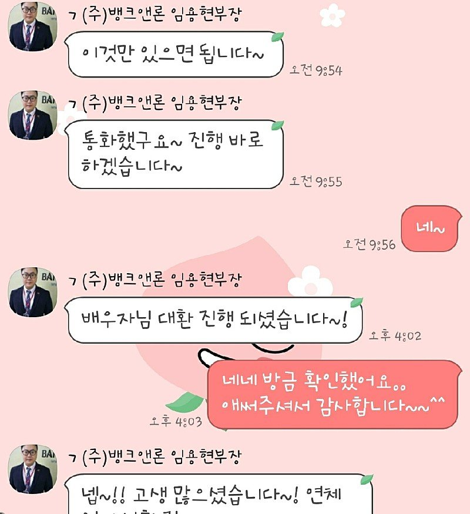

[개인회생자대출] 개인회생자 채무통합 대출후기(임용현 이사님)
직장인 재직기간 2년 6개월 정도
사대보험 유
연봉 3600
개인회생중
신랑 개인회생이 이번달이 마지막회차인데..
면책결정나고 다시 신용회복까지 시간이 좀
걸리고 그때 대부업 조회가 많으면 신용회복에
안좋다고 해서 대부업3건 쓰고 있는걸 저축은행으로
대환하려고 문의드렸어요..
3건 쓰고 있었는데 2건 통합해서 2천한도 나오고
저축은행서 대부업 대환하고 남은걸 보내주더라구요..
남은돈으로 이번달 카드값..유용하게 잘썼습니다..
설명도 알아듣기 쉽게 잘해주셔서 진행이 수월했던거 같아요..
나중에 신용회복되고나면 나머지도 대환할수 있는지 문의드릴께요~~감사했습니다^^
